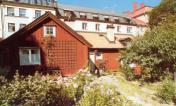

Lotsgatan 2
Skeppargränd 2
Tomten uppläts 1692 och tillhörde 1726 sågaren vid stadens skeppsvarv Anders Nilsson, en av flera sågare som kanske givit
namn åt Sågaregatan. Den nuvarande bebyggelsen finns beskriven 1806 men är med säkerhet äldre med undantag av ateljéstugan, som flyttats från Marieborg vid Farsta och uppfördes här 1964.
|
|


|